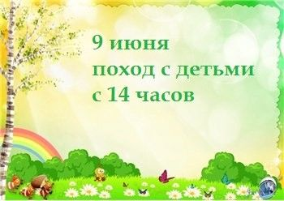
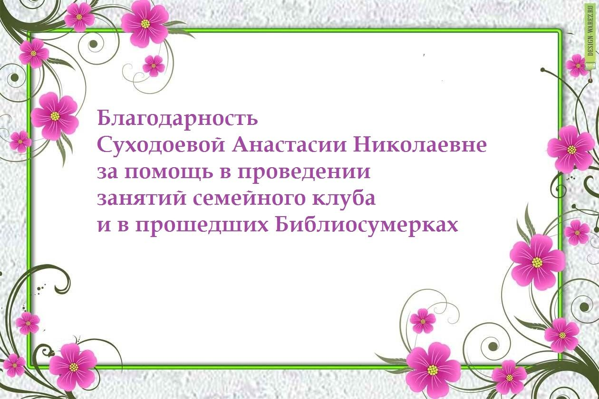
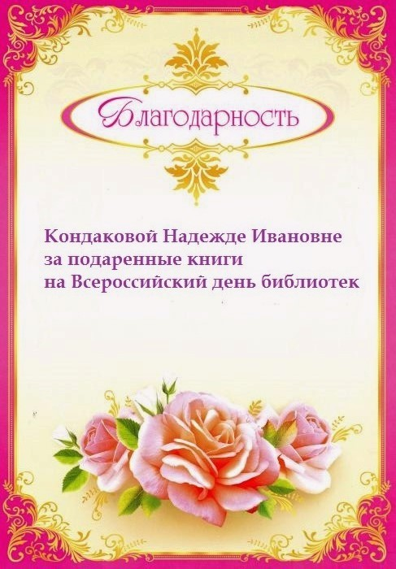
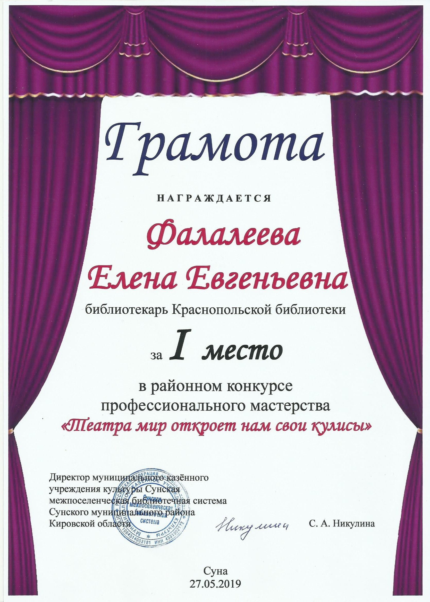

Новости
среда, 9 июня 2019 год
среда, 7 июня 2019 год
среда, 5 июня 2019 год
пятница, 3 июня 2019 год
понедельник, 20 мая 2019 год
15 мая в Краснопольской библиотеке прошла Шляпная вечеринка, приуроченная к Международному дню семьи.

Библиотекарь Фалалеева Е.Е. поздравила всех членов семейного клуба и гостей с праздником, пожелала здоровья и счастья. У каждого из нас своя, особенная любовь к шляпам. В библиотеке на четырёх столах была выставка шляп: колпак гнома, индейский головной убор, шляпка миньона, пиратская, ведьмы, клоуна, шута, женские. Оригинальные шляпы были у Анны Кондаковой, Светочки Суходоевой, Даши Суходоевой.
Ведущая пригласила гостей на Парад шляп. Все прошли под клип «Шляпа». Затем библиотекарь провела «Шляпную дискуссию». В шляпе находились жетоны с номерами. Под музыку все передавали друг другу шляпу, и на ком музыка останавливалась, тот вытягивал номер вопроса. За правильный ответ получали жетончик «шляпку».
Вопросы были такие:
- Это и головной убор, и страна в Америке. (Панама)
- Это и головной убор, и походная посуда. (котелок)
- Это и головной убор, и геометрическое тело. (цилиндр)
- Так называют и шляпку без полей, и лекарственную форму. (таблетка)
- Это есть и у моря, и у шляпы. (дно)
- Головной убор Мурзилки. (берет)
- Головной убор почтальона Печкина. (шапка-ушанка)
- Оригинальный головной убор Рассеянного с улицы Бассейной. (сковорода)
- Головной убор красноармейца, похожий на шлем богатыря. (будёновка)
- Головной убор этого сказочного героя был сделан из полосатого носка. (Буратино)
- Фуражка матроса. (бескозырка)
- Плоский головной убор узбеков, таджиков, казахов. (тюбетейка)
- У шута бывает с бубенцами, а у доктора — с красным крестом. (колпак)
- Головной убор, пришитый или пристегнутый к одежде. (капюшон)
- Если на теле кольчуга, то на голове... (шлем)
- Шторка для женского лица, прикреплённая к шляпке. (вуаль)
- Старинный русский головной убор, получивший название из-за своего сходства с гребнем на голове курицы. (кокошник)
Победила семья Суходоевых.
Следующий конкурс «Угадай, что под шляпой». На подносе под большой шляпой лежал предмет на букву «Ш». Участники угадывали, что это. Приз (шоколадное яйцо) достался Полине Ральниковой.
Конкурс на меткость «Попади в шляпу». На стуле лежала перевёрнутая шляпа. Первая участница получила конфеты. Встав на некотором расстоянии, Аня Кондакова поочерёдно бросала конфетки, стараясь попасть в шляпу. Количество попаданий засчитывалось. Далее бросала Женя Райлинг. Больше всего попаданий было у Жени.
В игре «Угадай на ощупь» Ксении Вотиновой надо было осмотреть головные уборы других и постараться запомнить их. Затем ей завязали глаза и подводили поочерёдно к участникам. Она ощупывала их головные уборы и пыталась угадать, кто перед ней находится. Почти всех угадала.
Далее поставили сказку-экспромт «Колобок» на новый лад. Старика изображал Саша Чекалкин, старуху — Полина Ральникова, зайца — Степан Суходоев, лису — Виолетта Вотинова, волка — Данила Задорин, медведя — Кириил Ситников, колобка — Ксюша Вотинова.
Под конец пришла очередь «Танцевального караоке», дети станцевали под три видео. А затем началось чаепитие.